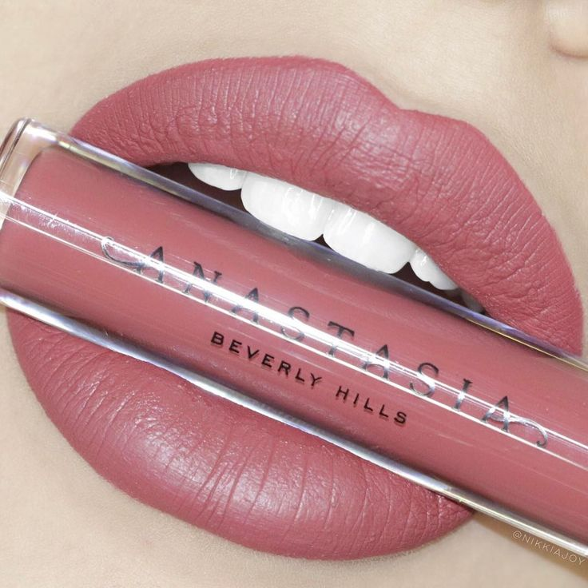
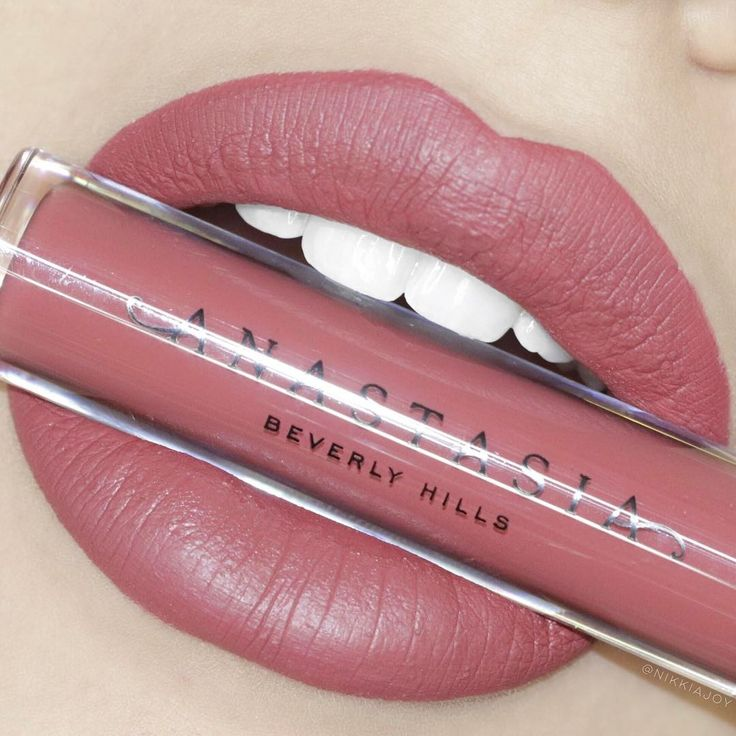

Om du vill köpa en bra ögonbrynsprodukt så rekommenderar jag att köpa från Anastasia Beverlyhills, deras ögonbrynsprodukter finns i olika format som till exempel deras ögonbrynspenna (brow fiz), dipbrow pomade, brow powder duo och deras ögonbrynsgel. Det finns på till exempel Kicks!
En annan bra produkt är en foundation från Maybeline New york Fit me, de har även en jättebra concealer.
Om du behöver en bra settingspray för att sätta sminket så rekommenderar jag Urban Decays settingspray, sminket håller sig bra verkligen hela dagen!
Om du vill ha något på läpparna så är liquid lipstick från Gerard cosmetics jättebra. De finns på madlady.
Beautyblender är bra för att till exempel blanda ut foundationen och annat flytande! De finns att köpa på nästan vilken som helst sminkaffär.
Om du behöver sminkborstar rekommenderar jag de från Real technics. Det är väldigt mjuka borstar och de håller sig bra länge, om man tvättar emellan något.
 
